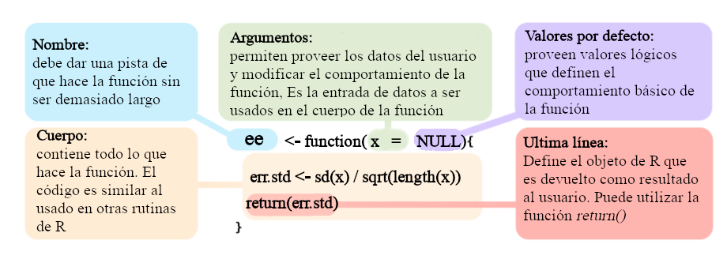
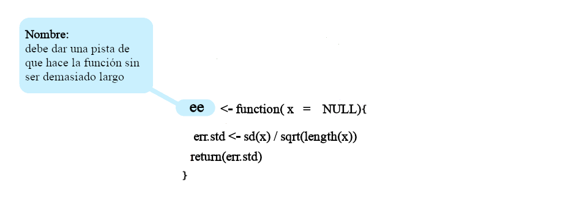
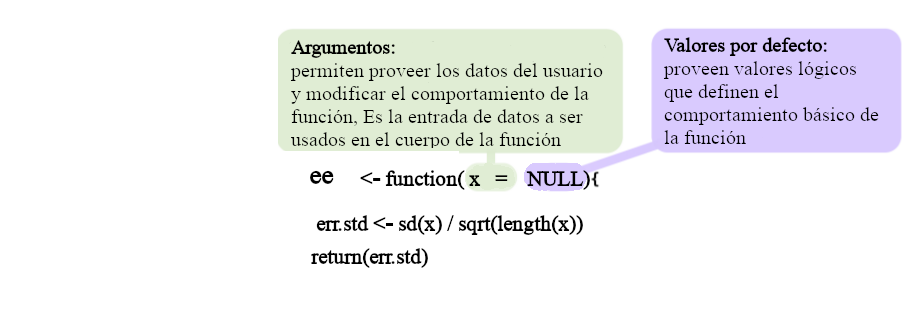
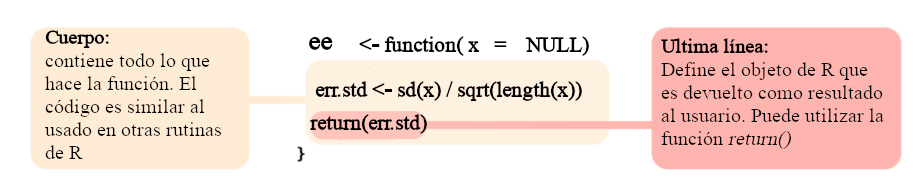

Identificar los elementos básicos que componen una función
Comprender las características de los principales tipos de argumentos en las funciones
Ser capaz de construir funciones propias
Todo lo que sucede en R es una llamada de una
función (i.e. las manipulaciones y cálculos de objetos en R
se realizan a través de una función)
Una función es una subrutina que tiene como objetivo realizar una tarea específica
Permite a los usuarios juntar bloques de código que se usan con frecuencia y, por lo tanto, resulta conveniente encapsular en un objeto que se puede llamar fácilmente cuando sea necesario
Las funciones cargadas desde los paquetes (incluido
R básico) también se pueden modificar y
sobrescribir
Todas las funciones son creadas iguales … mediante la función
function() y siguen la misma estructura:

* Modificado de Grolemund 2014
Podemos observar la estructura de funciones ya cargadas en nuestro
entorno de R. Para ver el código simplemente corra al
nombre de la función en R (sin el paréntesis). Por ejemplo,
el código de la función sd() se puede mostrar de la
siguiente manera:
## function (x, na.rm = FALSE)
## sqrt(var(if (is.vector(x) || is.factor(x)) x else as.double(x),
## na.rm = na.rm))
## <bytecode: 0x5571bf1ceda8>
## <environment: namespace:stats>
En Rstudio, el código también se puede mostrar usando
F2 cuando el cursor está en el nombre de la función.
Además, podemos diseccionar las funciones en sus elementos básicos:
## sqrt(var(if (is.vector(x) || is.factor(x)) x else as.double(x),
## na.rm = na.rm))## $x
##
##
## $na.rm
## [1] FALSE## <environment: namespace:stats>
Algunas funciones R utilizan funciones primitivas
(principalmente escritas en C). En estos casos, el código
no se muestra:
## function (..., na.rm = FALSE) .Primitive("sum")## NULL## NULL## NULL
Las funciones son en sí mismas un tipo específico de objeto:
## [1] "function"
Los operadores son funciones:
## [1] 2## [1] 2## [1] 6## [1] 6

Los nombres de las funciones tienen pocas restricciones. Siguen las
mismas reglas que otros objetos en R. Algunas
recomendaciones/reglas:
No utilice nombres de objetos comunes R (por
ejemplo, iris, x) u objetos que ya están en el
entorno
No use nombres de funciones de uso frecuente (por ejemplo,
mean)
No puede comenzar con un número
Debería sugerir lo que hace
No debe ser muy largo
En caso de que tenga varias funciones con el mismo nombre, puede
llamarlas individualmente utilizando el nombre del paquete (o
namespace) seguido de :::
## [1] 1 1024 59049 1048576 9765625## [1] 1.581139## [1] 1.581139
La sintaxis namespace::function también se puede usar
para llamar a funciones desde paquetes que se han instalado pero que no
están cargados en el entorno actual.
Las funciones pueden ser anónimas:
## [1] 1 1024 59049 1048576 9765625
Esto es más útil cuando se usan las funciones
Xapply:
## [[1]]
## [1] 1 1024 59049 1048576 9765625
##
## [[2]]
## [1] 1 1024 59049 1048576
##
## [[3]]
## [1] 1 1024 59049
Permiten a los usuarios ingresar objetos en la función. Los argumentos pueden o no tener valores predeterminados. Cuando los argumentos tienen valores predeterminados, no es necesario proporcionarlos:
## [1] 3
Por supuesto, se pueden modificar:
Los argumentos sin valor predeterminado deben ser proporcionados:
## Error in f1(): el argumento "x" está ausente, sin valor por omisión
Si todos los argumentos tienen un valor predeterminado, se puede invocar la función sin proporcionar ningún argumento:
## [1] 0
Ese es el caso de dev.off() y
Sys.time():
## [1] "2022-09-25 21:37:50 CST"
Los argumentos pueden especificarse implícitamente por posición o por nombres incompletos:
## List of 3
## $ a1: num 1
## $ b1: num 2
## $ b2: num 3## List of 3
## $ a1: num 1
## $ b1: num 2
## $ b2: num 3## List of 3
## $ a1: num 2
## $ b1: num 1
## $ b2: num 3## List of 3
## $ a1: num 3
## $ b1: num 1
## $ b2: num 2## List of 3
## $ a1: num 2
## $ b1: num 3
## $ b2: num 1
Sin embargo, esto no funciona si los nombres son ambiguos:
## Error in f2(b = 1, 2, a = 3): el argumento 1 concuerda con multiples argumentos formales
Es más seguro (y, por lo tanto, una mejor práctica) usar los nombres completos de los argumentos.
Las funciones también pueden tomar argumentos lógicos. Estos son
útiles para modificar el comportamiento de la función para que coincida
con diferentes escenarios. Por ejemplo, mean() permite a
los usuarios ignorar los NA:
## [1] NA## [1] 2
1.1 ¿Qué hace la función cor.test()?
1.2 Úsela con “Sepal.Length” y “Sepal.Width” de los datos de ejemplo
iris (use data(iris))
1.3 ¿Qué argumentos deben proporcionarse?
1.4 ¿Qué hace el argumento alternative? Use diferentes valores para este argumento y compare los resultados
1.5 ¿Cómo se puede calcular la correlación de Spearman?
1.6 ¿Qué tipo de objeto devuelve esta función?
1.7 ¿Cómo puede obtener el valor de p directamente del resultado de la función (sin guardar el resultado como un objeto)?
1.8 Escoga una función de R y lea su documentación con el fin de entender su uso, cada uno de sus argumentos (y que tipo de objetos requieren) y el resultado que produce (es probable que se le pida que explique esto al grupo)

El cuerpo de una función puede contener:
Comprobación de argumentos
Manipulación de datos
Definición de resultados
El cuerpo de la función puede tomar el mismo tipo de código utilizado
en cualquier rutina de R. Sin embargo, los objetos creados
no estarán disponibles en el entorno.
Cuando se realizan varios cálculos, debemos incluir una
declaración de retorno (return statement), que define
explícitamente la salida de la función. Esto se hace usando la función
return():
# sin 'return statement'
f1 <- function(x, y) {
z1 <- 2 * x + y
z2 <- x + 2 * y
z3 <- 2 * x + 2 * y
z4 <- x/y
}
f1(5, 3)
f1_out <- f1(5, 3)
f1_out## [1] 1.666667# con 'return statement'
f2 <- function(x, y) {
z1 <- 2 * x + y
z2 <- x + 2 * y
z3 <- 2 * x + 2 * y
z4 <- x/y
return(c(z1, z2, z3, z4))
}
f2(5, 3)## [1] 13.000000 11.000000 16.000000 1.666667## [1] 13.000000 11.000000 16.000000 1.666667
Por lo tanto, cuando no se proporciona una declaración de retorno, la función devolverá el último objeto que se creó en el cuerpo de la función:
# sin 'return statement'
f3 <- function(x, y) {
z1 <- 2 * x + y
z2 <- x + 2 * y
z3 <- 2 * x + 2 * y
z4 <- x/y
c(z1, z2, z3, z4)
}
f3(5, 3)## [1] 13.000000 11.000000 16.000000 1.666667## [1] 13.000000 11.000000 16.000000 1.666667
Es más seguro usar return().
Cuando una función realiza varias tareas, podemos usar una lista para juntar los diferentes objetos. Esto es particularmente útil cuando se generan objetos de diferentes clases (por ejemplo, vectores y listas):
f4 <- function(x, y) {
# 1 elemento
z1 <- x + y
# 2 elementos
z2 <- c(x, y/3)
# vector logico
z3 <- z2 < 10
l <- list(z1, z2, z3)
return(l)
}
f4(10, 5)## [[1]]
## [1] 15
##
## [[2]]
## [1] 10.000000 1.666667
##
## [[3]]
## [1] FALSE TRUE
Podemos acceder a elementos específicos de la salida de una función mediante indexación:
## [1] 15## [1] 10.000000 1.666667## [1] FALSE TRUE
Por supuesto, también podemos guardar el resultado como un objeto y acceder a cada elemento mediante la indexación:
## [1] 15## [1] 10.000000 1.666667
2.1 Cree una función llamada promedio que calcule el
promedio de un vector numérico. Internamente solo puede utilizar los
operadores algebraicos + y / (suma y división,
no puede llamar la función mean())
2.2 Cree una función que tome 2 argumentos numéricos (llámelos ‘x’ y ‘y’), eleve cada uno al cuadrado y luego los sume
2.3 Agregue valores predeterminados a cada argumento
2.4 Ejecute la función usando los valores predeterminados
2.5 Ejecute la función usando un valor predeterminado y uno proporcionado en la llamada
2.6 Ejecute la función proporcionando ambos valores en la llamada
Son argumentos que pueden tomar solo dos valores: TRUE o
FALSE. Estos argumentos permiten modificar el
comportamiento de la función de forma binaria: si es TRUE
llevaría a cabo la tarea 1 y si es FALSE llevaría a cabo la
tarea 2. Internamente (i.e. en el cuerpo de las función) estas funciones
implican el uso del operador if, algunas veces incluyendo
su contra-parte else. Estos operadores son parte
fundamental de la programación y se usan para definir que acción
ejecutar con base en una evaluación lógica:
## [1] 4## [1] 4## [1] -27
La parte dentro de los paréntesis justo después de if es
la evaluación lógica.
Estos operadores son utilizados en el cuerpo de la función cuando esta lleva un argumento lógico. Por ejemplo, la siguiente función utiliza un argumento lógico para decidir si la operación algebráica a realizar es una suma o un promedio:
mean_sum <- function(x, y, prom = FALSE) {
if (prom)
b <- mean(c(x, y)) else b <- sum(c(x, y))
return(b)
}
Note que este tipo de argumentos deben tener un valor predeterminado. Podemos probar la función de la siguiente forma:
## [1] 5
3.1 Cree una función que tome 3 argumentos numéricos, multiplíquelos
y luego calcule el logaritmo natural del resultado (función
log())
3.2 Agregue valores predeterminados a cada argumento
3.3 Ejecute la función con uno de los argumentos con un número negativo. ¿Qué pasa? ¿Por qué?
3.4 Agregue un argumento lógico que permita a los usuarios (si lo
desean) convertir los argumentos de entrada a su valor absoluto (usando
la función abs()). Agregue las modificaciones necesarias
para que la función haga los cálculos con y sin valores absolutos.
Los objetos creados dentro del cuerpo no están disponibles en el entorno actual:
# primero remover todo los objetos
rm(list = ls())
f5 <- function(x) {
sqr <- x * x
lg_sqr <- log(x)
return(lg_sqr)
}
f5(7)## [1] 1.94591## [1] FALSE## [1] FALSE
## [1] TRUE## [1] TRUE
Se pueden invocar funciones desde archivos de R externos
sin estar definidas en el código actual con la función
source(). En este ejemplo creamos la función
fnctn_X:
fnctn_X <- function(sq_mt, vctr) {
# trasponer matriz y calcular est dev
stp1 <- t(sq_mt)
stp2 <- vctr * vctr
# guardar en lista
rslt <- list(stp1, stp2)
return(rslt)
}
fnctn_X(sq_mt = cbind(c(1, 2), c(3, 4)), vctr = c(2, 3))## [[1]]
## [,1] [,2]
## [1,] 1 2
## [2,] 3 4
##
## [[2]]
## [1] 4 9
Guárde el codigo anterior en un archivo R llamado
‘function_X.R’. Ahora la función se puede cargar usando
source():
# removamosla del ambiente
rm(fnctn_X)
# cargar funcion
source("function_X.R")
# run it
fnctn_X(sq_mt = cbind(c(1, 2), c(3, 4)), vctr = c(2, 3))## [[1]]
## [,1] [,2]
## [1,] 1 2
## [2,] 3 4
##
## [[2]]
## [1] 4 9
Además, este código se puede compartir fácilmente. Se puede enviar por correo electrónico o publicar en línea. Incluso se puede cargar desde repositorios en línea:
## [1] FALSE# cargar desde el internet
source("https://raw.githubusercontent.com/maRce10/ucr_r_avanzado/master/images/function_x.r")
# revisar si existe en ambiente actual
exists("fnctn_X")## [1] TRUE
Esto ya deberia ser obvio a este punto.
4.1 Cree una funcion que calcule el promedio, la desviación estandar y el error estandar de un vector numérico. Estos valores deben ser devueltos como una lista con nombres.
4.2 Permita a los usuarios ignorar los NAs (similar al
argumento na.rm en mean(), pista: añada un
argumento lógico)
4.3 Haga que la función además produzca un histograma del vector númerico proporcionado por el usuario
4.4 Haga que la función escoja un color al azar para las barras del
histograma cada vez que se corre (pista:
sample(vector.de.colores))
4.5 Añada un argumento a la función que permita el usuario calcular
la sumatoria (sum()) junto con el resto de las descriptores
estadísticos
4.6 Agregue el promedio y la desviación estandar al título del
histograma (pista: use paste())
4.7 Modifique la función para que tambien cree una linea vertical indicando el promedio del vector numérico proporcionado por el usuario
4.8 Modifique la función para que añada un polígono transparente sobre el area que cubre el promedio +/- la desviación estandar
Introduction to R guide to writing functions with information for a total beginner
Information on functions for intermediate and advanced users (Hadley Wickham).
The official R intro material on writing your own functions (ir a “Writing your own function”)
Información de la sesión
## R version 4.1.1 (2021-08-10)
## Platform: x86_64-pc-linux-gnu (64-bit)
## Running under: Ubuntu 20.04.2 LTS
##
## Matrix products: default
## BLAS: /usr/lib/x86_64-linux-gnu/blas/libblas.so.3.9.0
## LAPACK: /usr/lib/x86_64-linux-gnu/lapack/liblapack.so.3.9.0
##
## locale:
## [1] LC_CTYPE=es_ES.UTF-8 LC_NUMERIC=C
## [3] LC_TIME=es_CR.UTF-8 LC_COLLATE=es_ES.UTF-8
## [5] LC_MONETARY=es_CR.UTF-8 LC_MESSAGES=es_ES.UTF-8
## [7] LC_PAPER=es_CR.UTF-8 LC_NAME=C
## [9] LC_ADDRESS=C LC_TELEPHONE=C
## [11] LC_MEASUREMENT=es_CR.UTF-8 LC_IDENTIFICATION=C
##
## attached base packages:
## [1] stats graphics grDevices utils datasets methods base
##
## other attached packages:
## [1] knitr_1.39 xaringanExtra_0.7.0 emo_0.0.0.9000
##
## loaded via a namespace (and not attached):
## [1] rstudioapi_0.13 magrittr_2.0.3 uuid_1.1-0 R6_2.5.1
## [5] rlang_1.0.4 fastmap_1.1.0 fansi_1.0.3 highr_0.9
## [9] stringr_1.4.0 tools_4.1.1 xfun_0.31 utf8_1.2.2
## [13] cli_3.3.0 jquerylib_0.1.4 htmltools_0.5.3 assertthat_0.2.1
## [17] yaml_2.3.5 digest_0.6.29 tibble_3.1.8 lifecycle_1.0.1
## [21] crayon_1.5.1 formatR_1.12 purrr_0.3.4 sass_0.4.1
## [25] vctrs_0.4.1 glue_1.6.2 evaluate_0.15 rmarkdown_2.14
## [29] stringi_1.7.8 compiler_4.1.1 bslib_0.3.1 pillar_1.8.0
## [33] generics_0.1.2 lubridate_1.8.0 jsonlite_1.8.0 pkgconfig_2.0.3